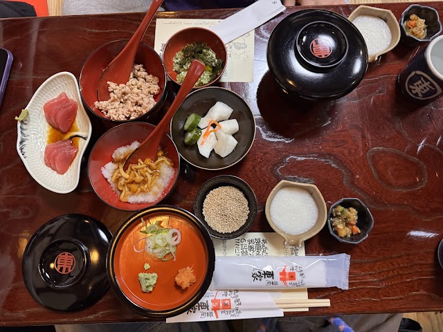
| 営業時間 | 月・火・水・木・金・土・日 11:00〜15:00, 17:00〜19:00 |
|---|---|
| 定休日 | なし(要最終確認) |
| 住所 | 岩手県盛岡市中ノ橋通１丁目８−３ |
| 予約 | 要確認 — ☎ 019-622-2252 ／ 公式サイト |
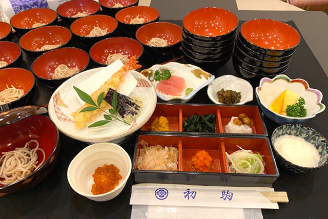
| 営業時間 | 月・火・水・金・土・日 11:00〜15:00 |
|---|---|
| 定休日 | 木曜 |
| 住所 | 岩手県盛岡市八幡町１０−２１ |
| 予約 | 可 — ☎ 019-651-7184 ／ 公式サイト |
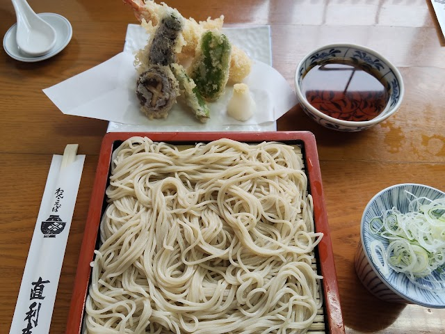
| 営業時間 | 月・火・木・金・土・日 11:00〜15:30, 17:00〜20:00 |
|---|---|
| 定休日 | 水曜 |
| 住所 | 岩手県盛岡市中ノ橋通１丁目１２−１３ |
| 予約 | 可 — ☎ 019-624-0441 ／ 公式サイト |
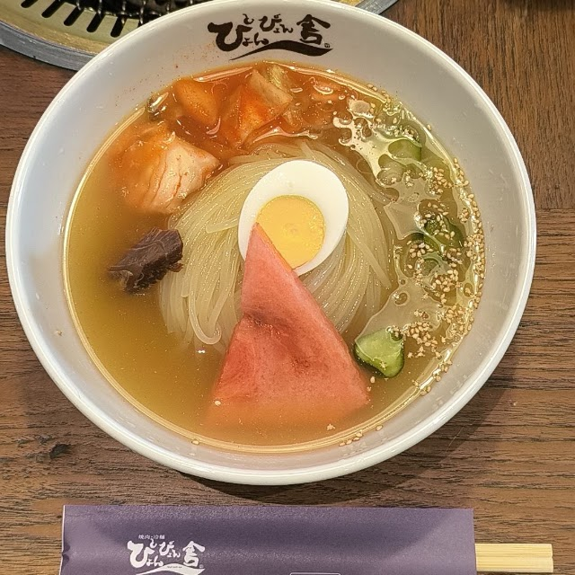
| 営業時間 | 月・火・水・木・金・土・日 11:00〜22:00 |
|---|---|
| 定休日 | なし(要最終確認) |
| 住所 | 岩手県盛岡市稲荷町１２−５ ぴょんぴょん舎 |
| 予約 | 可 — ☎ 019-646-0541 ／ 公式サイト |
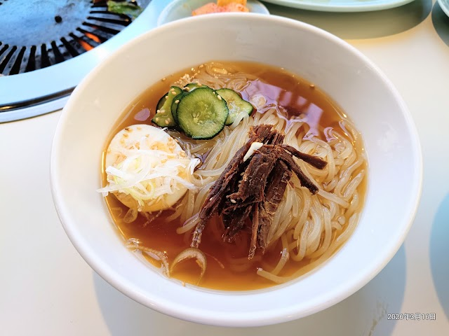
| 営業時間 | 月・火・水・木・金・土 11:30〜14:10, 17:00〜21:20 ／ 日 11:30〜14:10, 16:30〜20:20 |
|---|---|
| 定休日 | なし(要最終確認) |
| 住所 | 岩手県盛岡市大通１丁目８−２ |
| 予約 | 可 — ☎ 019-651-4590 ／ 公式サイト |
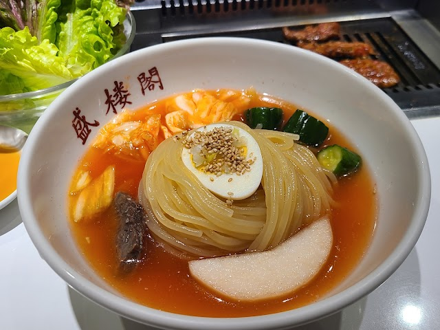
| 営業時間 | 月・火・水・木・金・土・日 11:00〜0:00 |
|---|---|
| 定休日 | なし(要最終確認) |
| 住所 | 岩手県盛岡市盛岡駅前通１５−５ |
| 予約 | 可 — ☎ 019-654-8752 ／ 公式サイト |
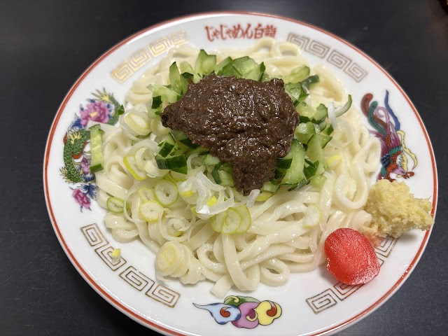
| 営業時間 | 月・火・水・木・金・土 9:00〜20:45 ／ 日 11:30〜16:00 |
|---|---|
| 定休日 | なし(要最終確認) |
| 住所 | 岩手県盛岡市内丸５−１５ |
| 予約 | 要確認 — ☎ 019-624-2247 ／ 公式サイト |
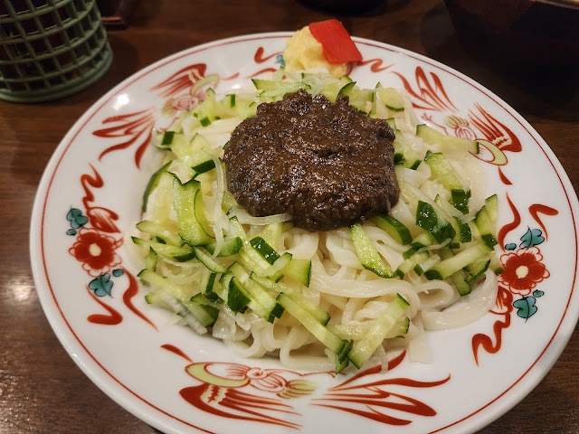
| 営業時間 | 月・火・水・木 12:00〜15:00, 20:30〜1:30 ／ 金・土 12:00〜15:00, 20:30〜2:00 |
|---|---|
| 定休日 | 日曜 |
| 住所 | 岩手県盛岡市大通２丁目４−１８ |
| 予約 | 要確認 — ☎ 019-626-2336 ／ 公式サイト |
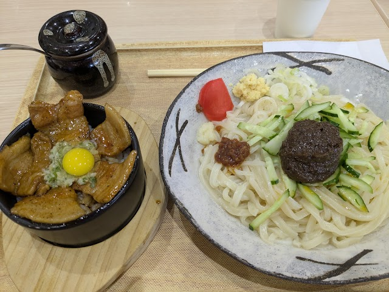
| 営業時間 | 月・火・水・木・金・土・日 10:00〜21:00 |
|---|---|
| 定休日 | なし(要最終確認) |
| 住所 | 岩手県盛岡市前潟４丁目７−１ イオンモール盛岡 2F フードコート内 |
| 予約 | 要確認 — ☎ 019-908-2036 ／ 公式サイト |
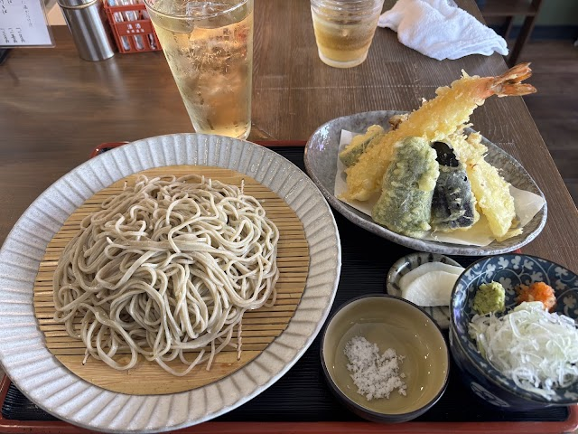
| 営業時間 | 月・日 11:30〜15:00 ／ 水・木・金・土 11:30〜15:00, 17:30〜20:00 |
|---|---|
| 定休日 | 火曜 |
| 住所 | 岩手県盛岡市菜園２丁目５−２６ メルヘンハウス 1Ｆ |
| 予約 | 可 — ☎ 019-656-9989 ／ 公式サイト |
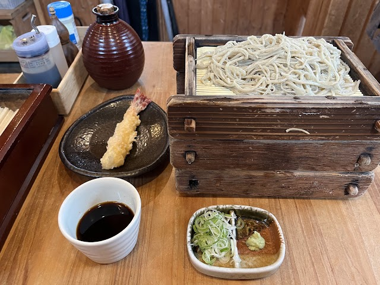
| 営業時間 | 月・火・水・木・金・土 11:00〜19:30 |
|---|---|
| 定休日 | 日曜 |
| 住所 | 岩手県盛岡市大沢川原１丁目１−１６ |
| 予約 | 要確認 — ☎ 019-652-0808 |
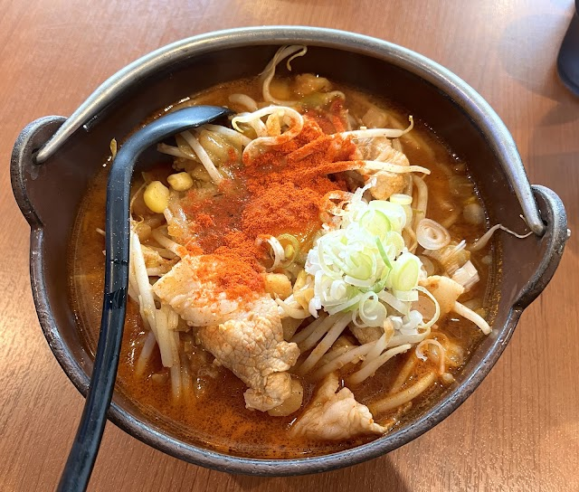
| 営業時間 | 月・火・水・木・金・土 11:00〜3:00 ／ 日 11:00〜0:00 |
|---|---|
| 定休日 | なし(要最終確認) |
| 住所 | 岩手県盛岡市大通２丁目１−２３ サンクイーンビル 1F |
| 予約 | 要確認 — ☎ 019-651-9100 ／ 公式サイト |
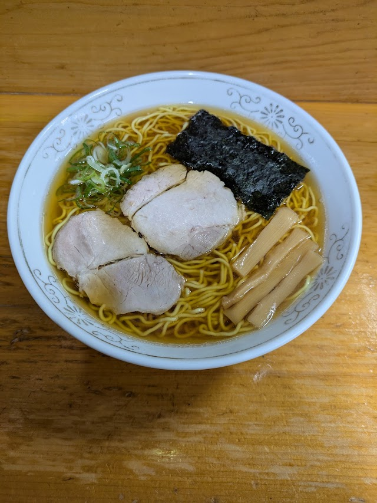
| 営業時間 | 月・火・水・木・金・土 11:00〜16:00 |
|---|---|
| 定休日 | 日曜 |
| 住所 | 岩手県盛岡市本町通１丁目７−３７ |
| 予約 | 要確認 — ☎ 019-622-5763 |
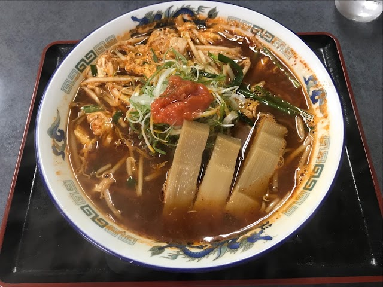
| 営業時間 | 月・火・水・金・土・日 11:00〜15:30 |
|---|---|
| 定休日 | 木曜 |
| 住所 | 岩手県盛岡市青山４丁目２７−１１ |
| 予約 | 要確認 — ☎ 019-643-7233 |
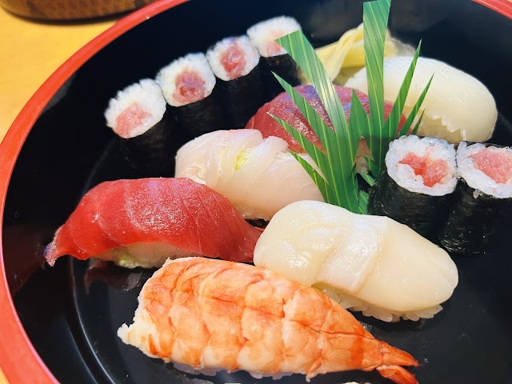
| 営業時間 | 月・火・水・木 11:00〜14:00, 17:00〜22:30 ／ 金・土 11:00〜23:00 ／ 日 11:00〜22:00 |
|---|---|
| 定休日 | なし(要最終確認) |
| 住所 | 岩手県盛岡市菜園２丁目５−３ |
| 予約 | 可 — ☎ 019-623-5500 ／ 公式サイト |
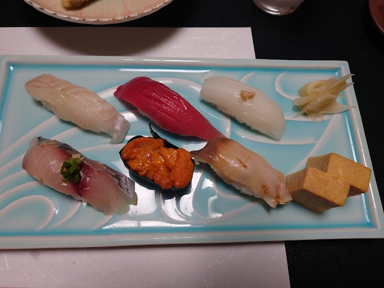
| 営業時間 | 月・火・水・木・金・土 11:30〜13:30, 17:00〜21:00 |
|---|---|
| 定休日 | 日曜 |
| 住所 | 岩手県盛岡市長田町１４−２ |
| 予約 | 可 — ☎ 019-654-5235 ／ 公式サイト |
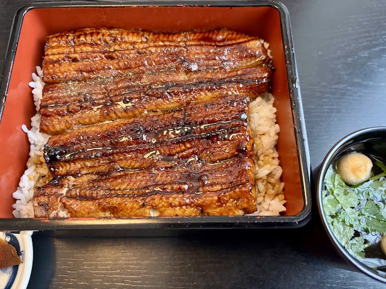
| 営業時間 | 月・火・水・木・金・土・日 12:00〜14:00, 18:00〜22:30 |
|---|---|
| 定休日 | なし(要最終確認) |
| 住所 | 岩手県盛岡市菜園１丁目１−２ |
| 予約 | 可 — ☎ 019-623-1122 ／ 公式サイト |
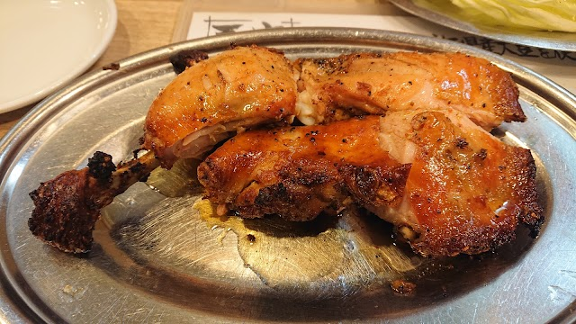
| 営業時間 | 17:00〜23:00頃(要確認) |
|---|---|
| 定休日 | 日曜(祝前日の場合は翌日休)、12月31日〜1月3日 |
| 住所 | 岩手県盛岡市開運橋通５−４ |
| 予約 | 要確認 — ☎ 019-654-4860 ／ 公式サイト |
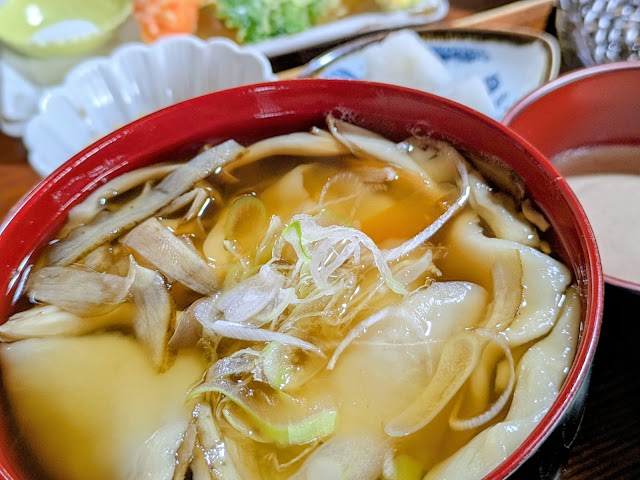
| 営業時間 | 月・水・木・金・土・日 11:00〜15:00 |
|---|---|
| 定休日 | 火曜 |
| 住所 | 岩手県盛岡市黒川１８地割18−６５ |
| 予約 | 可 — ☎ 019-696-2406 |
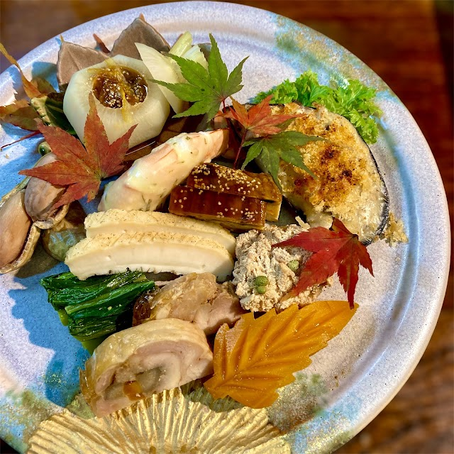
| 営業時間 | 月・火・水・木・金・土 17:00〜22:00 |
|---|---|
| 定休日 | 日曜 |
| 住所 | 2 ５ ５, ５ 松尾町 盛岡市 岩手県 020-0873 日本 |
| 予約 | 可 — ☎ 019-654-6123 ／ 公式サイト |
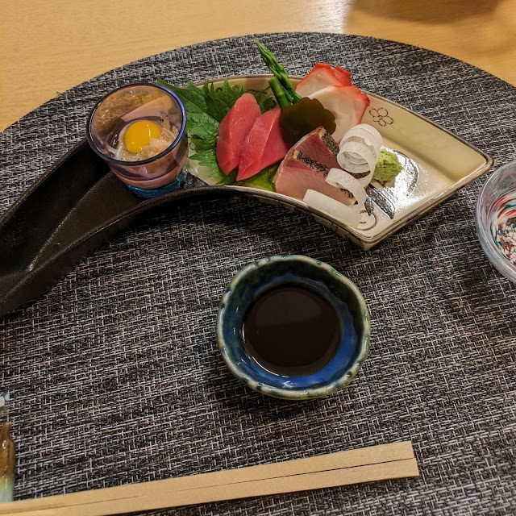
| 営業時間 | 月・火・水・木・金・土 17:00〜23:00 |
|---|---|
| 定休日 | 日曜 |
| 住所 | 岩手県盛岡市中央通１丁目６−３４ |
| 予約 | 可 — ☎ 019-653-8158 |
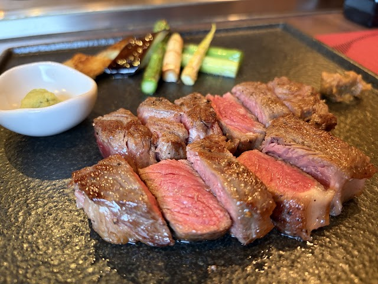
| 営業時間 | 月・水・木・金・土・日 11:30〜14:00, 17:00〜20:30 |
|---|---|
| 定休日 | 火曜 |
| 住所 | 岩手県盛岡市大沢川原１丁目３−３３ |
| 予約 | 可 — ☎ 050-3188-8610 ／ 公式サイト |
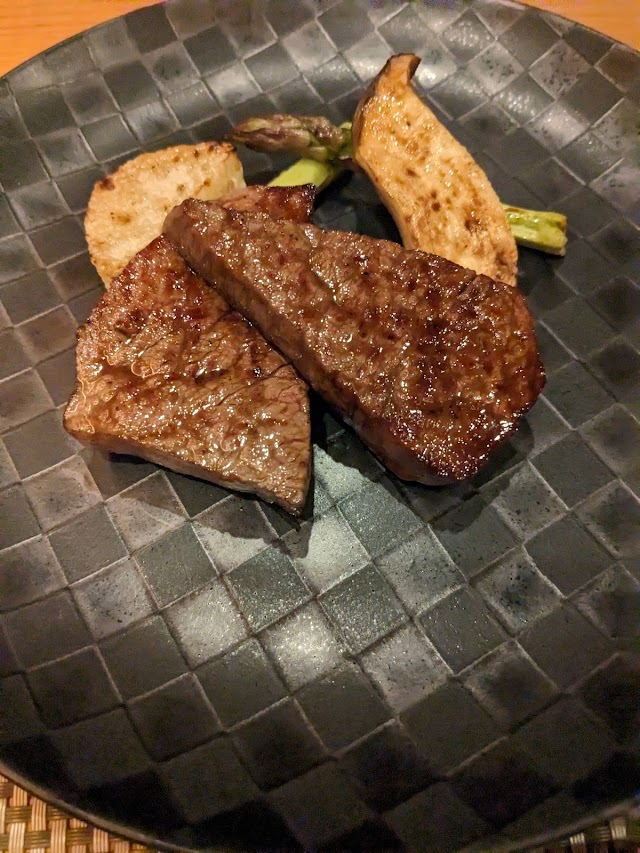
| 営業時間 | 火・水・木・金・土 17:00〜23:00 |
|---|---|
| 定休日 | 月・日曜 |
| 住所 | 岩手県盛岡市大通１丁目９−１０ レインボービル 3階 |
| 予約 | 可 — ☎ 019-625-2911 ／ 公式サイト |
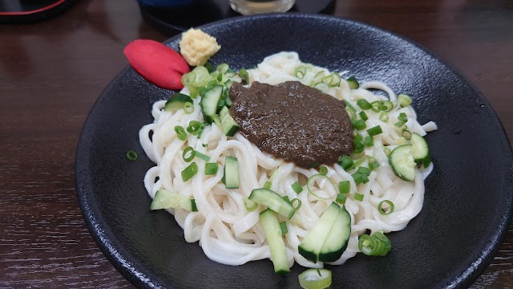
| 営業時間 | 月・火・水・木・金・土・日 11:30〜14:30 |
|---|---|
| 定休日 | なし(要最終確認) |
| 住所 | 岩手県盛岡市肴町６−９ |
| 予約 | 要確認 — ☎ 019-625-0033 |
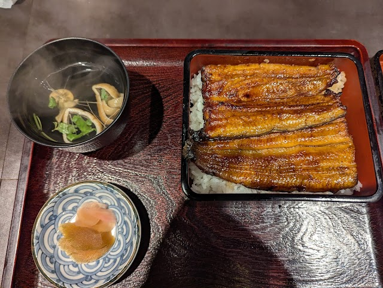
| 営業時間 | 月・火・水・木・金・土 11:30〜14:00, 17:00〜22:30 ／ 日 11:00〜13:30 |
|---|---|
| 定休日 | なし(要最終確認) |
| 住所 | 岩手県盛岡市大通り３丁目２−２１ |
| 予約 | 可 — ☎ 019-681-3533 ／ 公式サイト |
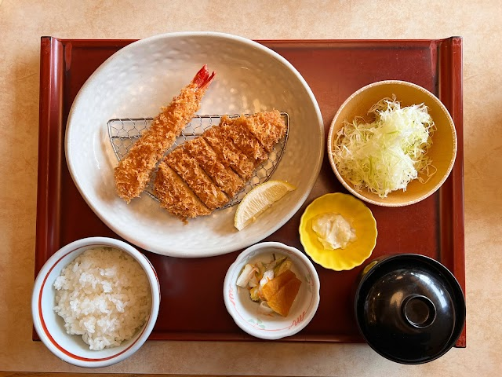
| 営業時間 | 月・火・水・木・金・土・日 11:00〜21:00 |
|---|---|
| 定休日 | なし(要最終確認) |
| 住所 | 岩手県盛岡市上田４丁目２１−３１ |
| 予約 | 可 — ☎ 019-652-5108 ／ 公式サイト |
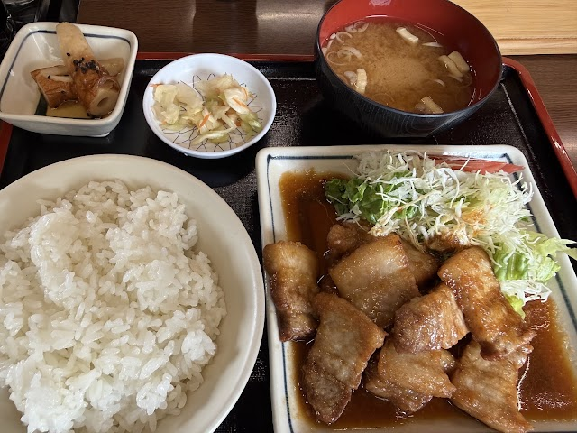
| 営業時間 | 月・水・木・金・土・日 11:00〜14:30, 17:00〜20:30 |
|---|---|
| 定休日 | 火曜 |
| 住所 | 岩手県盛岡市青山２丁目２４−２１ |
| 予約 | 要確認 — ☎ 019-647-2416 ／ 公式サイト |
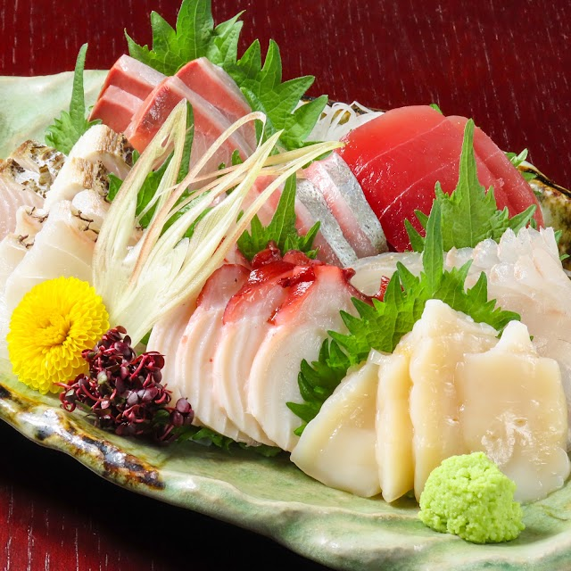
| 営業時間 | 月・火・水・木・金・土 17:00〜0:00 |
|---|---|
| 定休日 | 日曜 |
| 住所 | 岩手県盛岡市大通１丁目６−１７ プラザタイガースビル B1F |
| 予約 | 可 — ☎ 019-681-9490 ／ 公式サイト |
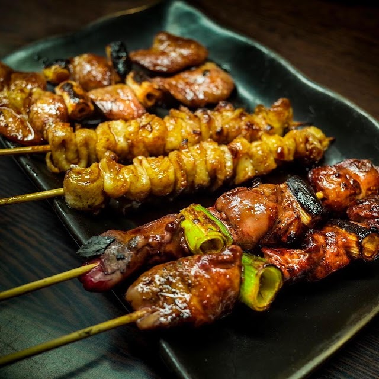
| 営業時間 | 月・火・水・木・金・土 18:00〜4:00 |
|---|---|
| 定休日 | 日曜 |
| 住所 | 岩手県盛岡市大通２丁目６−２１ 2階 |
| 予約 | 可 — ☎ 019-613-4495 ／ 公式サイト |
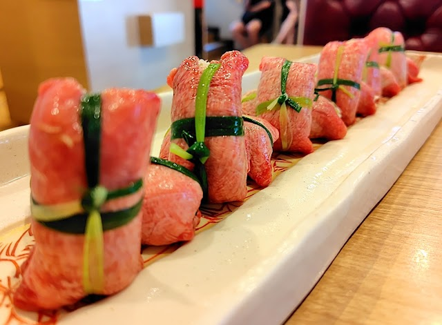
| 営業時間 | 月・火・水・木・金・土・日 11:00〜22:00 |
|---|---|
| 定休日 | なし(要最終確認) |
| 住所 | 岩手県盛岡市菜園２丁目６−１９ |
| 予約 | 可 — ☎ 019-654-5588 ／ 公式サイト |
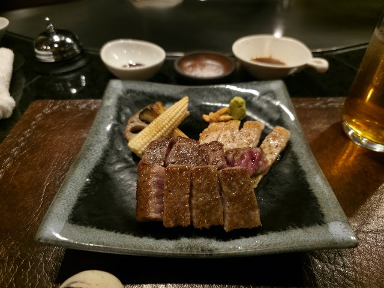
| 営業時間 | 11:30〜14:00(昼は要予約)/17:00〜翌1:00 |
|---|---|
| 定休日 | 日曜 |
| 住所 | 岩手県盛岡市菜園１丁目５−１０ グリムハウス 4F |
| 予約 | 可 — ☎ 019-654-6775 ／ 公式サイト |
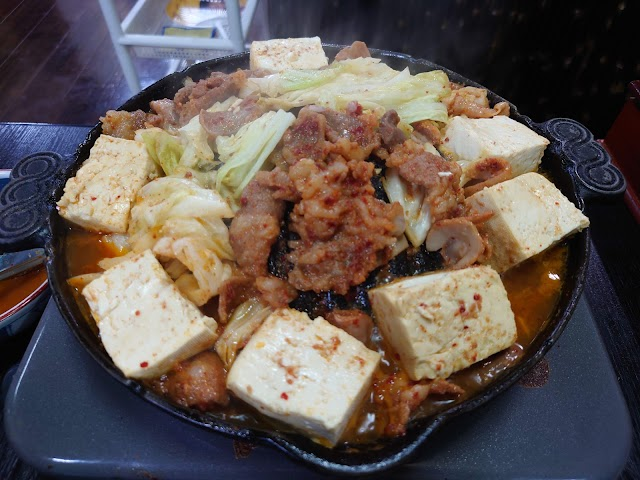
| 営業時間 | 月・火・水・木・金 11:30〜14:00, 16:00〜22:00 ／ 土・日 11:30〜22:00 |
|---|---|
| 定休日 | なし(要最終確認) |
| 住所 | 岩手県盛岡市南大通１丁目５−１ |
| 予約 | 可 — ☎ 019-626-3989 ／ 公式サイト |
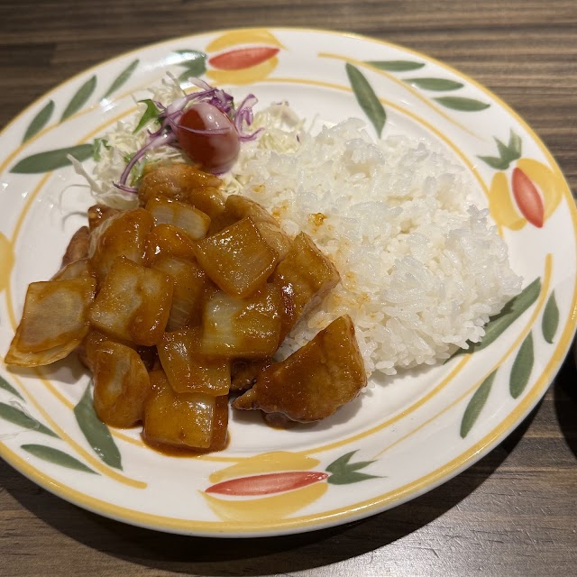
| 営業時間 | 火・水・木・金・土・日 11:30〜14:30, 17:30〜20:30 |
|---|---|
| 定休日 | 月曜 |
| 住所 | 岩手県盛岡市盛岡駅前通１０−３ |
| 予約 | 可 — ☎ 019-624-1800 ／ 公式サイト |
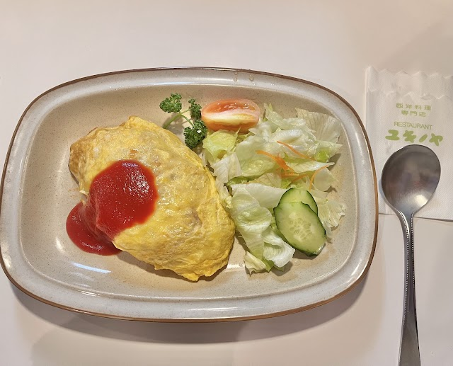
| 営業時間 | 月・火・水・木・金・土・日 11:30〜20:30 |
|---|---|
| 定休日 | なし(要最終確認) |
| 住所 | 岩手県盛岡市本町通２丁目１７−１ |
| 予約 | 可 — ☎ 019-654-0692 |
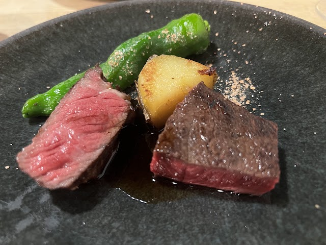
| 営業時間 | 火・水・木・金・土 11:30〜15:00, 18:00〜22:00 ／ 日 11:30〜15:00 |
|---|---|
| 定休日 | 月曜 |
| 住所 | 岩手県盛岡市中ノ橋通１丁目３−２１ |
| 予約 | 可 — ☎ 019-613-9005 ／ 公式サイト |
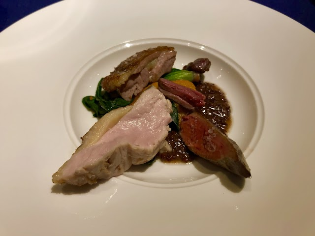
| 営業時間 | 月・火・水・木・金 18:30〜21:30 ／ 土・日 12:00〜14:30, 18:30〜21:30 |
|---|---|
| 定休日 | なし(要最終確認) |
| 住所 | 岩手県盛岡市鉈屋町３−３６ |
| 予約 | 可 — ☎ 019-681-4210 |
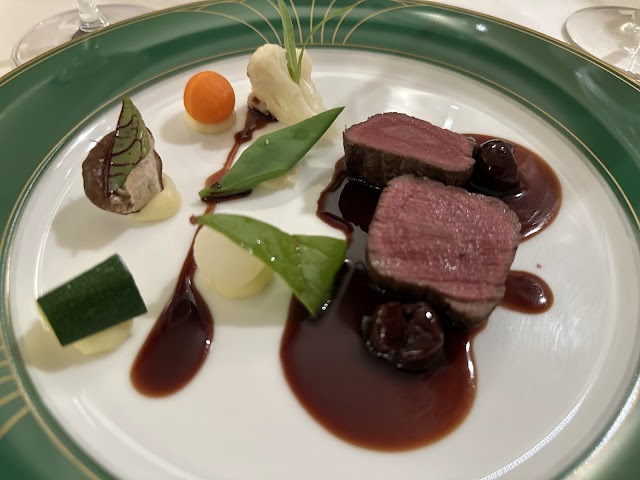
| 営業時間 | 水・木・金・土・日 11:30〜13:30, 18:00〜20:00 |
|---|---|
| 定休日 | 月・火曜 |
| 住所 | 岩手県盛岡市神明町１０−１０ |
| 予約 | 可 — ☎ 019-601-5205 ／ 公式サイト |
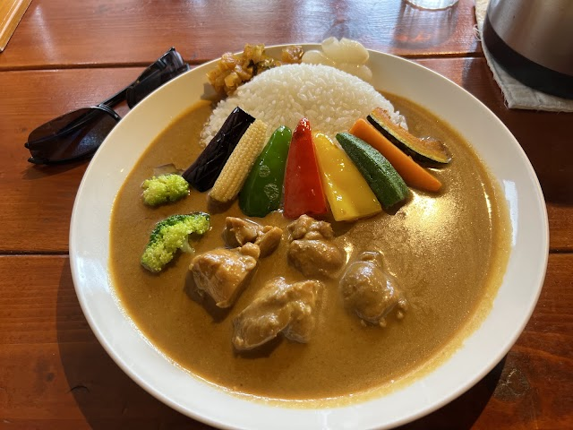
| 営業時間 | 火・水・木・金・土 11:30〜14:30, 17:45〜19:30 |
|---|---|
| 定休日 | 月・日曜 |
| 住所 | 岩手県盛岡市中ノ橋通１丁目８−１ |
| 予約 | 要確認 — ☎ 019-651-1223 ／ 公式サイト |
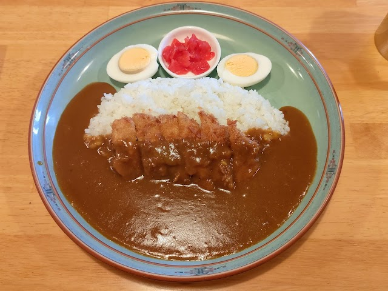
| 営業時間 | 月・火・水・木・金・土・日 11:00〜21:30 |
|---|---|
| 定休日 | なし(要最終確認) |
| 住所 | 岩手県盛岡市本町通３丁目４−２３ シタラ レジデンス |
| 予約 | 要確認 — ☎ 019-623-0114 |
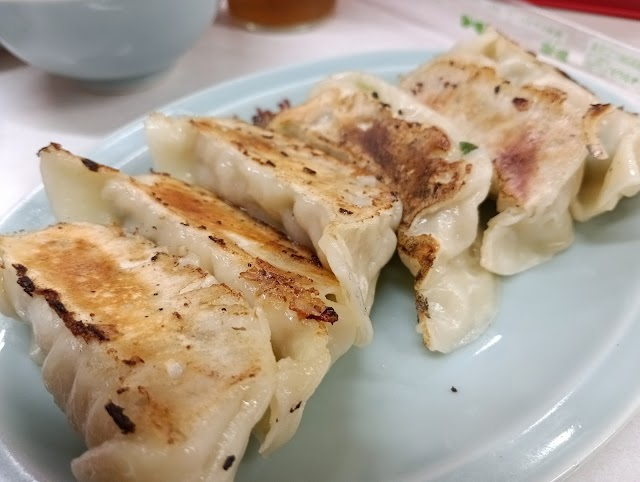
| 営業時間 | 月・火・水・木・金 12:15〜13:30, 17:30〜20:00 |
|---|---|
| 定休日 | 土・日曜 |
| 住所 | 岩手県盛岡市内丸４−８ |
| 予約 | 要確認 — ☎ 019-622-7242 ／ 公式サイト |
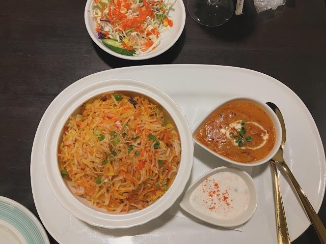
| 営業時間 | 月・火・水・木・金・土・日 11:00〜15:00, 17:00〜22:30 |
|---|---|
| 定休日 | なし(要最終確認) |
| 住所 | 岩手県盛岡市中央通り１丁目６−２６ サトウビル １F |
| 予約 | 可 — ☎ 019-681-8037 ／ 公式サイト |
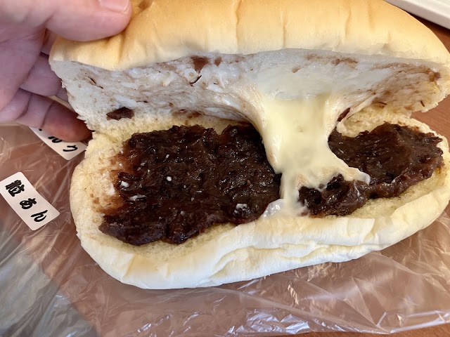
| 営業時間 | 月・火・水・木・金・土・日 7:00〜17:00 |
|---|---|
| 定休日 | なし(要最終確認) |
| 住所 | 岩手県盛岡市長田町１２−１１ |
| 予約 | 要確認 — ☎ 019-622-5896 ／ 公式サイト |
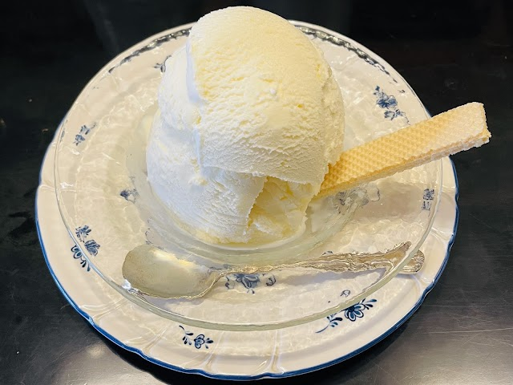
| 営業時間 | 月・火・水・木・金・土・日 10:00〜16:30 |
|---|---|
| 定休日 | なし(要最終確認) |
| 住所 | 岩手県盛岡市材木町２−１８ 光原社本店内 |
| 予約 | 要確認 — ☎ 019-622-2894 ／ 公式サイト |
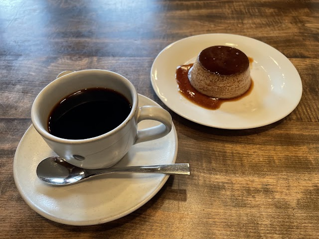
| 営業時間 | 月・火・金・土 11:00〜16:00 |
|---|---|
| 定休日 | 水・木・日曜 |
| 住所 | 岩手県盛岡市紺屋町５−３３ |
| 予約 | 要確認 — ☎ 019-651-7207 ／ 公式サイト |
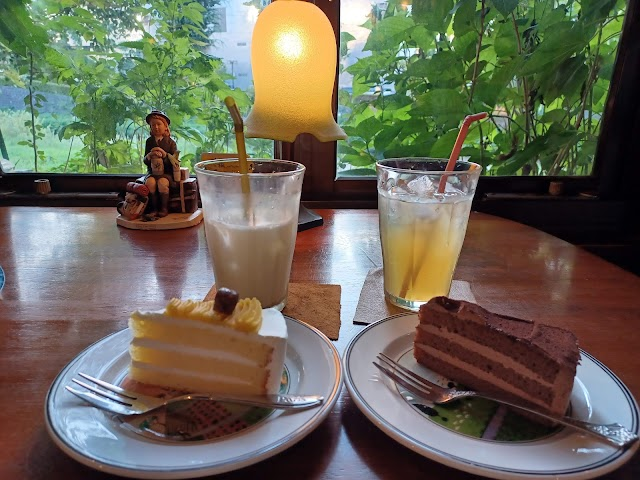
| 営業時間 | 月・火・水・木・金・土 11:30〜20:00 ／ 日 11:30〜17:00 |
|---|---|
| 定休日 | なし(要最終確認) |
| 住所 | 岩手県盛岡市紺屋町１−２ |
| 予約 | 要確認 — ☎ 019-622-2353 ／ 公式サイト |
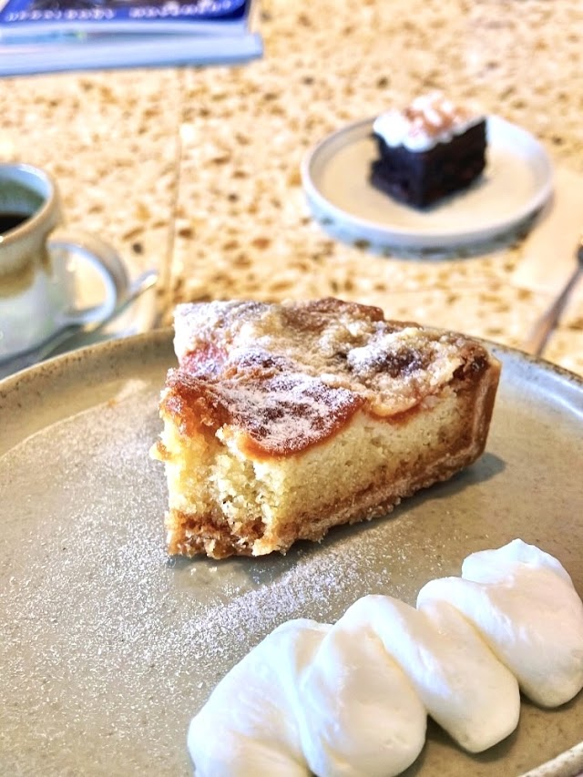
| 営業時間 | 月・火・水・金・土・日 11:00〜20:00 |
|---|---|
| 定休日 | 木曜 |
| 住所 | 岩手県盛岡市上田１丁目１１−２３ |
| 予約 | 要確認 — 公式サイト |
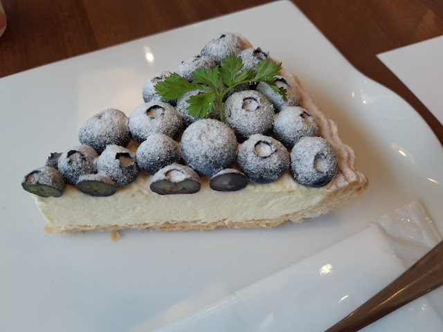
| 営業時間 | 月・火・水・木・金・土・日 9:00〜18:00 |
|---|---|
| 定休日 | なし(要最終確認) |
| 住所 | 岩手県盛岡市八幡町１３−３４ |
| 予約 | 要確認 — ☎ 019-626-1700 ／ 公式サイト |
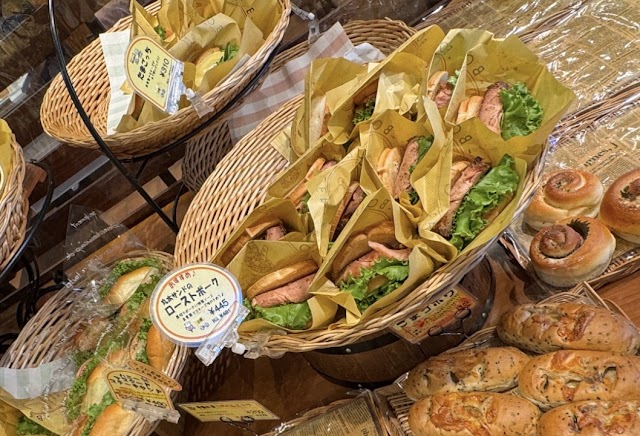
| 営業時間 | 月・火・水・木・金 7:30〜18:30 ／ 土・日 7:30〜18:00 |
|---|---|
| 定休日 | なし(要最終確認) |
| 住所 | 岩手県盛岡市大通３丁目３−１ タウンコート大通 |
| 予約 | 要確認 — ☎ 019-626-2033 ／ 公式サイト |
| 営業時間 | 月・火・水・木・金・土・日 9:00〜17:00 |
|---|---|
| 定休日 | なし(要最終確認) |
| 住所 | 岩手県盛岡市紺屋町２−１６ |
| 予約 | 要確認 — ☎ 019-622-7224 ／ 公式サイト |
| 営業時間 | 月・火・水・木・金・土 8:30〜17:00 |
|---|---|
| 定休日 | 日曜 |
| 住所 | 岩手県盛岡市神明町２−３ |
| 予約 | 要確認 — ☎ 019-622-4509 |
本ガイドは個人利用目的で作成。掲載情報は2026年8月時点の調査に基づく。写真出典: Google Maps投稿写真(©各投稿者/Google)。